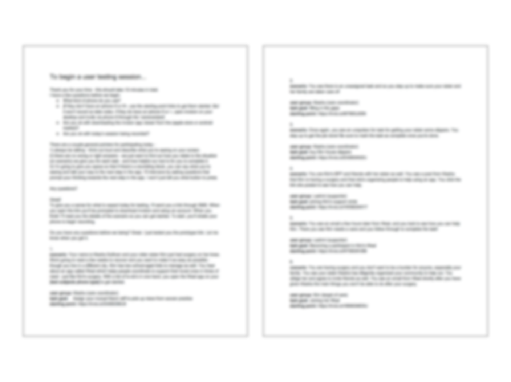

Weal is an early-stage social enterprise that already had a rich body of research in the care taking tool space. As a UX design consultant, I guided and supported Weal's strategy and process to translate the team's knowledge into a viable product that would take the company to their next fundraising benchmark.
Note: I've blurred these artifacts to protect IP of the company.
Building on our synthesis of research and resulting artifacts, we discussed each persona, scenario, user flow and interaction. We explored possibilities for every aspect of the interface on the whiteboard, made a decision for the final approach then used Proto.io to build a prototype.
Note: I've blurred these artifacts to protect IP of the company.
Using Proto.io to test in-person and remotely, the team learned to facilitate testing sesssions, synthesize feedback and evolve our design hypotheses to build confidence for the company's next product launch and funding round.
Note: I've blurred these artifacts to protect IP of the company.
